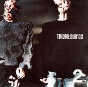

Home Artist links Label link

Trio96 - Duo 03
| Artist: | Trio96 |
| Title: | Duo 03 |
| Label: | Musea FGBG 4561.AR/Poseidon PRF-017 |
| Length(s): | 42 minutes |
| Year(s) of release: | 2004 |
| Month of review: | [03/2005] |
Line up
Ishikawa Kenji - guitar, v-guitar
Tanaka Yasuhiro - drums, v-drums
Tracks
| 1) | Left-handed Rotation | 9.04
|
| 2) | Kerenmi Afueru Pray | 6.03
|
| 3) | Curriculum | 5.51
|
| 4) | Improvisation (Braford) | 6.48
|
| 5) | Hommage à A & G | 5.42
|
| 6) | Improvisation (Distance, Perspective) | 9.00
|
Summary
In four years time, the quartet has become a duo, still not a trio.
The music
Left-handed Rotation shows that the band has gone in a very different
direction. Gone is the sax, gone is highly energetic jazz feel. Instead,
we have a very slow build up, reminiscent of the ProjeKCts, the sound
being modern, rather angular, and slightly towards the avant-garde.
The drummer is still here, but he tends to be more percussively oriented.
A very slow tune this one, the guitar sounding quite Frippian, with long
sustained notes. The sound does become fuller throughout, in fact a teen bit
chaotic. Melodically, there is not much that appeals here.
Kerenmi Afueru Pray follows a similar style, except that it capitalizes on
the dissonants. Interesting, but not something to initiate your friends with
into the world of progressive rock. It is hard to actually describe how
this sounds, so you'd better listen to the sample. We end in chaos.
Curriculum is back to slow percussion. We needed that. Again, moody
electronics are spun over easy going percussion, building a nice relaxed
mood, rather like a warm bath. Very nice.
With Improvisation (Braford) thing get more hectic again. The percussion
is in the lead here, while the guitar mumbles somewhere in the back.
We are back in the line of the Crim ProjeKCts again, progrock with a nice
groove, but melodically not that interesting.
I wonder who A and G are in Hommage à A & G. This track also follows the music of Fripp somewhat, but then his soundscapes. The drums
make things come out much more jazzy, moving more towards and ECM type
thing.
The second, longish Improvisation (Distance, Perspective), opens with
percussion mainly. Soon afterwards we arrive at a typical jazz sound with
what seems like a bass rumbling under the very up front drums. It is followed
by stretches of meandering guitar.
More something for a live concert than to put on a record.
Conclusion
Mainly influenced it seems by King Crimson's satellite ProjeKCts, this is
a duo making a groovy kind of jazz rock, rather stark and angular, in which
there is little room for melody. However, in places the duo relaxes somewhat
to move to a warm ECM type thing or some moody synths over relaxed
percussion. That alternation keeps the weariness away. In its style this
is certainly a nice album that does not overstay its welcome, although the
improvs can be rather lengthy, percussive and well, improvised. Of course,
Kerenmu Afueru Pray is something to hear, although I can't say it is easy to enjoy.
© Jurriaan Hage